초록
여러 암시적 하위 태스크의 시퀀스로 구성된 장기 호라이즌(long-horizon)의 일상적인 태스크는 오프라인 로봇 제어에서 여전히 주요한 과제이다. 기존의 여러 방법들이 모방 학습 및 오프라인 강화학습의 변형을 통해 이러한 설정을 해결하고자 했으나, 학습된 행동은 대개 좁은 범위에 국한되며 설정 가능한 장기 호라이즌 목표에 도달하는 데 어려움을 겪는 경우가 많다. 두 패러다임이 상호 보완적인 강점과 약점을 가지고 있으므로, 본 논문에서는 고차원 카메라 관측으로부터 태스크 무관 장기 호라이즌 정책을 학습하기 위해 두 방법의 강점을 결합한 새로운 계층적 접근 방식을 제어한다. 구체적으로, 모방 학습을 통해 잠재 스킬(latent skills)을 학습하는 저수준 정책과 잠재 행동 사전 분포(behavior priors)를 스킬 체이닝(skill-chaining)하기 위해 오프라인 강화학습으로 학습된 고수준 정책을 결합한다. 다양한 시뮬레이션 및 실제 로봇 제어 태스크에서의 실험은 우리의 정식화가 목표 체이닝을 통해 잠재 스킬들을 서로 "스티칭(stitching)"함으로써, 시간적으로 확장된 목표에 도달하기 위해 이전에 보지 못한 새로운 스킬 조합을 생성할 수 있음을 보여주며, 최첨단(state-of-the-art) 베이스라인 대비 한 자릿수 이상의 성능 향상을 달성한다. 심지어 실제 환경에서 25가지의 서로 다른 조작 태스크에 대해 단 하나의 다중 태스크 시각-운동(visuomotor) 정책을 학습하였으며, 이는 모방 학습과 오프라인 강화학습 기법 모두를 능가하는 성능을 보여준다.
핵심어: 오프라인 강화학습(Offline Reinforcement Learning), 모방 학습(Imitation Learning), 로봇 러닝(Robot Learning)
1 서론
최근 몇 년 동안 강화학습(RL)은 다양한 분야에서 엄청난 성공을 거두었다 [1, 2, 3, 4]. 특히 이전에 수집되어 고정된 데이터셋으로부터 (최적에 가까운) 최적 정책을 추정하는 매력적인 특성을 가진 오프라인 RL [5, 6, 7, 8, 9, 10]은 로봇 제어 연구에서 강력한 흐름을 만들어냈다. 그러나 이 빠르게 변화하는 분야의 눈부신 발전에도 불구하고, 현재의 오프라인 RL 방법들은 여러 암시적 하위 태스크의 순차적 관계를 본질적으로 수반하는 일상적 태스크의 복잡성과 장기적 의존성이 결여된, 매우 구체적이고 인위적인 벤치마크에서 주로 평가되는 경우가 많다. 이러한 복합 태스크의 특성상, 이는 상당한 양의 연속적인 의사결정 단계에 대해 최적의 행동을 추정하는 것으로 이어지므로, 이러한 최적 정책을 학습하는 것을 매우 어렵게 만든다. 실제로 Kidambi et al. [11]는 태스크의 호라이즌과 임의의 오프라인 RL 방법의 최악의 경우 누적 오차 사이에 이차(quadratic) 관계가 있음을 발견했다. 이는 특히 가공되지 않은 비구조화된 감각 입력의 경우에 큰 도전 과제가 되는데, 로봇이 방대한 스킬 레퍼토리를 학습하고 이를 결합하여 긴 시간 척도에서 작동하는 일상적인 태스크를 수행할 수 있어야 하기 때문이다.
장기 호라이즌 문제를 완화하는 한 가지 방법은 태스크를 고수준 및 저수준 정책으로 계층적으로 세분화하는 것이며, 여기서 고수준 정책은 프리미티브에 대한 여러 저수준 정책의 실행을 체이닝한다. 가장 일반적으로 이러한 계층 구조는 다소 경직되어 있으며 고정된 수의 저수준 정책에 따라 작동하므로, 대부분의 실제 환경에서 요구되는 유연성과 확장성이 부족하다. 또한, 유용한 저수준 스킬(skills)을 사전(a priori)에 정의하거나 데이터로부터 이를 발견하는 것은 매우 까다로운 작업이다. 관련된 이전 연구들은 이를 보수적 Q-학습(Conservative Q-learning) [6]의 목표 조건부 재정식화 [12]를 통해 해결하고자 했다. 그러나 짧고 뚜렷한 로봇 조작 태스크에서 라벨이 없는 플레이(play) 데이터에 대한 자기지도 학습이 전문가가 학습한 개별 행동 복제(behavioral-cloning) 정책의 성능을 크게 능가할 수 있음이 밝혀졌다 [13]. 반면, 이러한 설정에서는 계산 비용이 많이 드는 오프라인 RL 방법과 대등한 성능을 보일 수도 있다 [14, 15]. 따라서 본 연구에서는 인간의 행동 실행에 기반한 비목표 지향적 궤적 수집본인 플레이 데이터(play data)를 활용하여, 단기 호라이즌(short-horizon) 전문가 정책을 모방 학습을 통해 추정하고, 이를 오프라인 RL로 최적화된 성긴 입도(coarse-grained)의 고수준 정책을 통해 체이닝함으로써 장기 호라이즌(long horizons)에 걸친 최적의 솔루션을 보장할 것을 제안한다. 비구조화된 데이터에서 추출한 잠재 계획(latent plans)을 스티칭함으로써, 우리의 정식화는 수집된 플레이 데이터로부터의 모방이 가진 단순함을 제공하는 동시에 순차적인 다단계 태스크에 대한 장기적 최적성을 제공한다. 구체적으로, 오프라인 RL의 성공적인 적용을 위해서는 우수한 상태 커버리지와 시각적 다양성을 가진 데이터를 획득하는 것이 중요하므로, 우리는 수집된 데이터를 사용하여 계층적 정책을 학습한다. 플레이 데이터는 사용자가 사전에 정의된 태스크 세트를 염두에 두지 않고 제공한, 의미론적으로 유의미한 행동들의 세분화되지 않은 원격 제어(teleoperated) 데이터셋에 접근할 수 있다고 가정한다. 저수준 정책으로 이산적인 태스크 세트를 수행하여 장기 호라이즌 태스크를 학습하는 기존의 계층적 접근 방식과 달리, 우리는 태스크 무관 제어가 가능한 에이전트라는 아이디어에서 동기를 얻었다. 이러한 설정에서 우리는 에이전트에게 주어진 초기 상태로부터 가능한 모든 목표 상태에 도달할 수 있는 능력을 부여한다. 구체적으로, 자기지도 방식으로 학습된 잠재 스킬로부터 모터 제어 행동을 디코딩하는 저수준 정책을 학습한다. 이 저수준 정책은 정책에 잠재 계획을 조건화함으로써 특정 상태에 있을 때 다양한 행동을 수행할 수 있다. 결과적으로, 우리는 장기 호라이즌 태스크를 달성하기 위해 이러한 행동들을 순서대로 배치하는 고수준 정책도 학습한다. 이 고수준 정책은 저수준 정책에 의해 디코딩될 잠재 계획을 출력하는 목표 조건부 정책으로 모델링된다. 행동 사전 분포의 스킬 체이닝은 사후 과잉 라벨링(hindsight relabeling)으로 계획 전이를 보강함으로써 오프라인 RL을 통해 학습된다. 이러한 계층적 접근 방식은 전체 태스크를 더 작은 하위 태스크 조각으로 분해함으로써 실용적인 해결책을 구성한다. 고수준 정책은 유효 에피소드 호라이즌이 단축되고 세계의 물리 법칙을 상세히 포착할 필요가 없으므로 장기 호라이즌 태스크를 학습할 수 있으며, 이는 RL 에이전트의 기저 역학(dynamics)을 단순화한다. 이러한 모델 정식화는 데이터에서 도달한 모든 가능한 상태를 잠재적 태스크로 고려함으로써 범용적인 훈련 목적 함수를 설계할 수 있게 한다. 또한, 우리의 접근 방식은 반드시 최적의 행동을 포함하지는 않는 대규모의 다양한 데이터셋으로부터 정책을 학습하는 데 효과적이다.
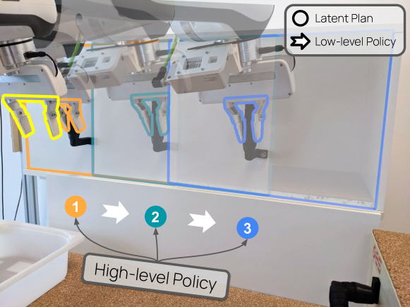
본 연구의 주된 기여는 모델 프리(model-free) RL 방법과 모방 학습을 결합하여 고차원 관측으로부터 태스크 무관 제어 정책을 학습하는 계층적 자기지도 접근 방식을 제안하는 것이다. 우리가 아는 한, 우리의 방법은 모델에 대한 접근 없이 순수하게 오프라인이며 비구조화된 플레이 데이터로부터 장기 호라이즌 다단계 태스크를 해결하는 것을 명시적으로 목표로 하는 최초의 학습 시스템이다. 우리는 우리의 구성 요소를 Task-AgnostiC Offline Reinforcement Learning (TACO-RL)이라 불리는 통합 프레임워크로 통합한다. 개요는 그림 1을 참조하라. 우리는 우리의 모델이 까다로운 CALVIN 환경 [16]의 다양한 장기 호라이즌 태스크에서 다른 최첨단 베이스라인과 비교하여 테스트했을 때 가장 높은 성공률을 얻었으며, 시뮬레이션 및 실제 환경의 테이블탑 환경 모두에서 광범위한 장기 호라이즌 조작 태스크를 수행할 수 있는 단일 시각-운동 7자유도 정책을 학습할 수 있음을 보여준다. 테스트 시점에 실제 환경 시스템은 태스크당 300회 이상의 의사결정을 포함하는 25가지의 까다로운 조작 태스크 세트를 10 Hz로 해결할 수 있다.
2 관련 연구
오프라인 강화학습. 오프라인 RL [5], 즉 고정되고 잠재적으로 혼합된 전이(transition) 세트로부터의 RL은 RL 및 로봇 제어 연구의 최근 트렌드를 구성한다. 일반적으로, 적어도 모델 프리 설정에서 이러한 기법들은 오프라인 RL 방법이 가치 과대평가 문제로 인해 심각한 어려움을 겪는 경향이 있기 때문에, 학습된 정책이 데이터셋의 커버리지 내에 유지되도록 분포 외(out-of-distribution) 행동에 정규화를 가한다. 이 문제를 해결하기 위한 가장 단순하면서도 경쟁력 있는 시도는 고전적인 액터-크리틱(actor-critic) 프레임워크에 행동 복제(behavioral cloning)를 추가하는 것이다 [8]. 반면, 보수적 Q-학습(Conservative Q-learning) [6]은 데이터셋에 포함되지 않은 행동에 대해 패널티를 부과하여 분포 외 행동을 비최적으로 만든다. Fisher-BRC는 크리틱을 가중 오프셋 항으로 확장된 로그 행동 정책 [17]으로 매개변수화한다. Implicit Q-learning [10]은 벨만 최적성 업데이트를 SARSA와 유사한 업데이트로 수정하여 데이터셋 내의 행동에 대해서만 최대화한다. 그러나 대부분의 현재 오프라인 RL 방법의 근본적인 원리는 상당히 유사하다. 실험에서 최근 오프라인 RL에서 가장 널리 사용되는 벤치마크 중 하나로 떠오른 보수적 Q-학습을 사용하지만, 고전적인 오프라인 RL 목적 함수에 대한 다른 정교한 개선 사항들은 우리 연구와 직교하며 원칙적으로 우리 프레임워크에 통합될 수 있음을 밝혀둔다.
계층적 정책 학습. 계층적 정책 학습은 저수준 정책이 모터 제어 행동을 수행하고 고수준 정책이 저수준 정책을 지시하여 태스크를 해결하는 정책의 계층 구조를 학습하는 것을 포함한다. 일부 연구 [18, 19, 20]는 각각 프리미티브 스킬로 작동하는 이산적인 저수준 정책 세트를 학습하지만, 이는 연속적인 행동을 수행하는 범용 로봇에는 적합하지 않다. 우리의 방법과 유사한 논리를 따르는 대다수의 계층적 정책 최적화 접근 방식은 잠재 상태 공간에서의 계획(planning) [21, 22, 23, 24, 25, 26, 27, 28]을 사용하므로 다단계 스킬의 복잡한 역학을 다루는 모델을 필요로 하며, 이는 그 자체로 활발한 연구 분야이다. 우리는 모델 기반 계획과 대조적으로 모델 프리 RL을 통해 고수준 정책을 추정함으로써 모델의 필요성을 완화하고, 따라서 연속적인 스킬 세트에 대한 최적화를 완전히 훈련 시간에 유지한다. 수많은 이전 연구 [29, 30, 31, 32, 33, 34, 35]와 대조적으로, 우리의 접근 방식은 로봇 제어 정책 학습에 많은 매력적인 특성을 제공하는 오프라인 패러다임에서 작동한다. 장기 호라이즌 문제를 해결할 수 있는 스킬 체이닝 정책으로 가는 과정에서, 우리의 접근 방식은 전문가 데이터나 사전 정의된 스킬에 의존하는 다른 연구 [36, 37, 38]와 달리 비구조화된 플레이 데이터를 활용하여 잠재 스킬 임베딩을 추정한다. 원칙적으로 다른 잠재 스킬 표현 [39, 40, 41, 42, 43]도 고려될 수 있지만, 우리는 이 동일한 설정에서 이미 뛰어난 성능과 견고성을 보여준 Play-LMP [13]를 기반으로 구축한다. 우리의 설계 선택은 이전의 오프라인 방법들 [13, 44]보다 더 복잡한 설정인, 복잡한 장기 호라이즌 태스크에 대해서도 높은 제로샷 일반화 능력을 갖춘 범용 시각-운동 에이전트를 지향한다. 요약하자면, 우리의 접근 방식은 모델이나 계획의 필요 없이 완전히 오프라인이고 비구조화되었으며 라벨이 없고 서브옵티멀(suboptimal)한 데이터로부터 시간적으로 확장된 태스크를 해결하는 것을 목표로 한다. 따라서 이러한 독특한 특성의 조합은 로봇 러닝의 도구 상자에 확장 가능하고 유연한 최적화 방법을 추가한다.
3 수학적 기초
이 섹션에서는 표기법을 도입하고 문제 설정을 정의한다. 우리는 환경과 목표 조건부 정책 간의 상호작용을 목표 보강 마르코프 결정 과정(goal-augmented Markov decision process) 으로 모델링하며, 여기서 은 상태 관측 공간, 는 행동 공간, 은 상태 전이 확률 함수, 는 보상 함수, 는 목표 공간을 지정하고, 은 초기 상태 분포, 은 할인 인자(discount factor)를 나타낸다. 에이전트는 환경의 실제 상태에 접근할 수 없으며 시각적 관측에만 접근할 수 있음에 유의한다. 우리는 라벨이 없고 방향성이 없는 대규모 고정 데이터셋 을 사용한다고 가정하여 오프라인 방식으로 학습한다. 그런 다음 이 긴 시간적 상태-행동 스트림을 사후 라벨링하여 모델에 대한 접근 없이도 저수준 및 고수준 정책을 모두 학습하는 데 사용할 수 있는 궤적 데이터셋 을 생성한다.
4 TACO-RL을 이용한 오프라인 목표 조건부 RL
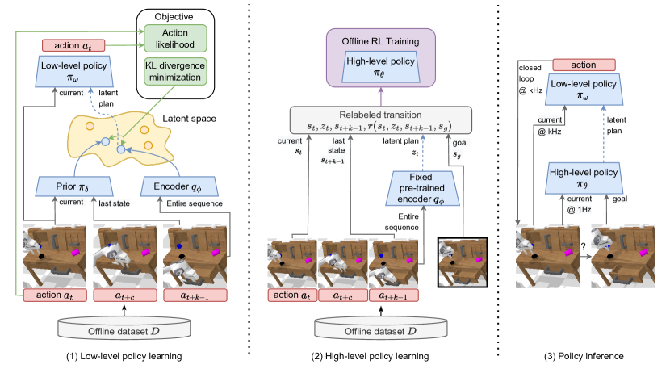
이 섹션에서는 TACO-RL에 대해 자세히 설명한다. 우리가 제안하는 방법은 상향식(bottom-up) 접근 방식을 고려한다. 먼저 저수준 정책을 훈련하고 이를 사용하여 고수준 정책을 위한 고수준 행동 공간을 제공하며, 이러한 태스크 분할 덕분에 고수준 정책은 이상적으로 더 쉬운 학습 문제에 직면하게 된다. 먼저, 로부터 잠재 조건부 행동 의 연속 공간을 학습하는 비지도 목적 함수를 설명한다. 여기서 는 현재 상태를 나타낸다. 그 후, 이전에 학습된 저수준 정책의 도움을 받아 하위 궤적을 사후 과잉 라벨링함으로써 오프라인 RL로 고수준 정책을 학습하는 방법을 자세히 설명한다. 이는 우리의 유효 태스크 호라이즌을 단축하여 장기 호라이즌 태스크를 더 쉽게 학습할 수 있도록 한다. 또한, 저수준 정책은 오프라인 데이터 분포에 가까운 행동을 예측하여 전체 학습 파이프라인에 안정성을 가져다준다. 개요는 그림 2을 참조하라.
4.1 저수준 정책 학습
우리는 에이전트가 주어진 상태 내에서 취할 수 있는 의미 있는 행동을 제안하는 프리미티브(primitive)의 연속적인 공간을 추출하고자 한다. 우리는 오프라인의 비구조화된 데이터셋 으로부터 잠재 계획(latent plan) 을 각각의 모터 제어 동작 으로 디코딩할 수 있는 저수준 정책(low-level policy) 을 학습한다. 학습 후에는, 잠재 기술들을 목표 체이닝(goal chaining)을 통해 함께 "이어 붙임(stitching)"으로써 고수준 정책이 시간적으로 확장된 목표에 도달하는 것을 학습하기 위한 행동 공간으로 잠재 계획을 사용할 수 있다.
우리의 고정된 정적 데이터셋 에서는 서랍을 빠르게 혹은 느리게 닫는 것과 같이, 한 장면에서 동일한 결과를 달성하는 서로 다른 유효한 행동들을 발견할 수 있을 것으로 기대된다. 우리는 시퀀스 투 시퀀스 조건부 변분 오토인코더(seq2seq CVAE) [13, 45]를 통해 잠재 계획 공간을 거쳐 맥락 데이터를 오토인코딩함으로써 이러한 내재적인 다중 모드성(multi-modality)을 해결한다. 잠재 계획에 대해 동작 디코더를 조건화하면 정책이 단일 모드(uni-modal) 행동을 학습하는 데 모든 용량을 사용할 수 있게 된다. 결과적으로, 우리는 저수준 정책 을 학습하기 위해 다음과 같은 목적 함수를 제안한다:
| (1) |
여기서 은 경험적 기댓값을 나타내며, 은 잠재 계획 인코더로 해석될 수 있다. 알고리즘의 추가적인 구성 요소로서, 우리는 인코더 와 사전 분포(prior) 에 의해 예측된 잠재 변수들 간의 일관성을 강제한다. 우리의 목표는 주어진 궤적 에 대한 동작의 시간적 시퀀스를 포착하는 잠재 계획 을 얻는 것이므로, 이 하위 궤적의 초기 및 마지막 상태가 주어졌을 때 분포 가 단지 프리미티브 또는 잠재 변수 를 예측하는 것에 가까워지도록 강제하는 정규화, 즉 을 활용한다. CVAE에 대한 증거 하한(Evidence Lower Bound, ELBO) [46]은 다음과 같이 작성할 수 있다:
| (2) |
4.2 사후 재라벨링을 통한 오프라인 강화학습 (Offline RL with Hindsight relabeling)
인코더 , 잠재 행동 정책 , 그리고 사전 분포 의 관점에서 으로부터 학습된 행동을 추출한 후, TACO-RL은 이러한 행동들을 적용하여 오프라인 RL로 범용 에이전트를 학습한다. 우리는 환경 궤적에 보상 함수를 증강하여 목표 증강 MDP를 공식화한다. 이를 통해 데이터셋 으로부터 궤적을 샘플링한다. 그런 다음, 사전 학습된 고정 인코더를 사용하여 이 궤적을 고수준 정책 전이로 표현한다. 이를 위해 정책 인코더 로부터 잠재 계획을 샘플링하고, 샘플링된 잠재 계획 을 사용하여 상호작용 전이를 생성한다. 이 전이에 보상을 증강하기 위해, 다음과 같이 희소 보상(sparse reward)을 사용하는 사후 재라벨링(hindsight relabeling)을 사용한다 . 이 공식에서 우리는 추론 중에 저수준 정책을 사용하여 잠재 계획을 디코딩할 수 있으며 최종 궤적 상태 에 도달할 것이라고 가정한다. , , 은 모두 이미지를 나타내며, 보상은 고수준 전이가 도달한 상태와 목표 상태가 정확히 일치할 때만 주어진다. 학습 동안 목표는 나중에 논의할 분포 에 따라 샘플링된다. 우리의 Q-러닝 접근 방식은 다음과 같은 벨만 오차 최적화 목적 함수에 대응한다:
| (3) |
그 후 우리는 기성 오프라인 액터-크리틱(actor-critic) 방법을 사용하여 고수준 정책 을 학습할 수 있다. TACO-RL에서는 보수적 Q-러닝(Conservative Q-Learning, CQL) [6]을 사용하며, 여기서 액터 가중치를 이전에 학습된 사전 정책 으로 초기화한다. 사전 정책은 이미 단기 과제를 해결할 수 있는 좋은 출발점이기 때문이다.
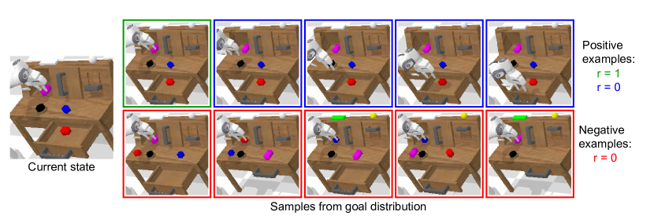
전이 재라벨링을 위한 목표 선택. 우리의 고수준 정책은 장기 목표에 도달하기 위해 기술들을 체이닝하는 방법을 동적 계획법(dynamic programming)을 통해 학습하고자 하므로 오프라인 RL을 통해 학습된다. 이를 위해 일련의 계획을 실행한 후 도달할 수 있는 목표 상태 를 샘플링하는 공식화가 필요하다. 데이터셋에서 균등하게 무작위 상태를 샘플링하는 등 을 순진하게 선택하면 극도로 희소한 보상 신호를 제공하게 되는데, 두 개의 무작위 상태 이미지가 동일할 가능성은 거의 없기 때문이다. 이러한 희소 보상 문제는 [50]와 동일한 궤적을 따라 미래 타임스텝에서 도달한 상태들을 목표로 선택적으로 샘플링함으로써 완화할 수 있다. 우리는 계획을 실행한 후에 도달하는 상태를 샘플링하고자 하므로, 임의의 윈도우 크기 를 가정한다. 구체적으로, 타임스텝 에서의 전이에 대한 목표를 샘플링하기 위해, 을 만족하는 이산 시간 오프셋 을 샘플링하고, 시간 에서의 상태를 목표로 사용한다. 잠재 계획 디코딩으로부터 일관된 전이를 가정한다면, 만약 일 때 이 전이에 대한 보상은 1이 되며, 저수준 정책이 계획을 실행한 후 지정된 상태에 도달하게 되므로 희소성 문제를 피할 수 있다.
그러나 모든 전이를 이런 방식으로 재라벨링하면 문제가 발생한다. 거리 함수가 달성된 목표에 대해서만 학습되기 때문에, 도달 불가능한 목표까지의 거리를 체계적으로 과소평가하게 된다. 우리는 멀리 떨어져 있지만 여전히 관련성이 있는 "음성(negative)" 목표를 선택하는 방법이 필요하다. 상태를 무작위로 선택하면 멀리 떨어져 있을 가능성은 높지만 반드시 관련성이 있는 것은 아닌 이미지 쌍이 생성된다(예: 모든 물체와 로봇이 이동된 쌍). 우리는 더 많은 정보를 제공하는, 멀리 떨어진 상태의 덜 명백한 예시들을 생성하는 목표 샘플링 절차를 원한다. Tian et al. [51]과 유사하게, 우리는 유사한 고유 수용 감각 상태를 가진 음성 목표 상태 를 샘플링한다. 이 제약 조건은 Q-함수가 서로 다른 위치를 가질 가능성이 높은 장면의 미구동 부분(예: 물체)에 집중하는 법을 배울 수 있도록 한다. 결과적으로, 이러한 타임스텝들은 하드 네거티브(hard negative) 역할을 하여 모델이 장면에 더 세심한 주의를 기울이도록 유도한다. 이 샘플링 접근 방식은 미리 계산된 k-최근접 이웃(k-nearest neighbors) 구조를 쿼리할 수 있기 때문에 계산 비용이 저렴하다.
5 실험 결과
우리는 시뮬레이션 및 실제 환경 모두에서 범용 로봇을 학습하기 위해 TACO-RL을 평가한다. 이 실험들의 목표는 다음을 조사하는 것이다: (i) 우리의 계층적 모델이 복잡한 장기 기술을 수행하는 데 효과적인지 여부, (ii) TACO-RL이 대안적인 목표 조건부 정책들과 어떻게 비교되는지, (iii) 우리의 모델이 실제 로봇 공학에 사용될 수 있도록 확장 가능한지 여부.
5.1 실험 설정
우리는 시뮬레이션 및 실제 환경 모두에서 우리의 접근 방식을 평가한다. 먼저 CALVIN 환경 [16]에서 7자유도(7-DoF) 시각운동(visuomotor) 로봇 기술 학습을 조사한다. 우리는 3D 테이블탑 환경에서 물체를 조작하기 위해 Franka Emika Panda 로봇 팔을 원격 조작하여 수집한 시간 분량의 비구조화된 플레이 데이터가 포함된 CALVIN의 환경 D에서 학습을 진행한다.
베이스라인 방법들. 우리는 모방 학습과 오프라인 RL이라는 두 패러다임의 상호 보완적인 강점을 결합하는 것을 목표로 하므로, 스펙트럼의 양 극단을 대표하는 방법들과 TACO-RL을 비교한다: 사후 재라벨링으로 확장된 오프라인 RL 방법인 보수적 Q-러닝 [6] (CQL+HER) 및 모방 학습 방법인 플레이 감독 하의 잠재 운동 계획 (Play-supervised Latent Motor Plan, LMP) [13]이다. CQL+HER은 Section 4.2에서 설명한 대로 도출된 보상에 대해 학습되며, 보이지 않는 행동의 가치를 제한하기 위해 분포 외(out-of-distribution) 행동에 대한 페널티를 도입한다. 공정한 비교를 위해, 이 베이스라인 역시 네거티브 마이닝(negative mining) 트릭을 사용하여 학습된다. 반면, LMP는 목표 조건부 모방 에이전트를 학습하며 TACO-RL의 저수준 정책과 유사하지만, TACO-RL이 더 고수준의 계획 선택 정책의 오프라인 RL을 통해 설명하는 장기적 최적성 보장은 제공하지 않는다. 추가적으로, 우리는 릴레이 모방 학습 (Relay Imitation Learning, RIL) [32]과도 비교한다. 이 알고리즘은 오프라인 플레이 데이터로부터 학습한다는 점에서 가장 관련성이 높은 계층적 알고리즘이다. RIL은 저수준 정책을 위한 잠재 하위 목표(subgoal)를 예측하도록 학습하는 방법론 계열을 대표한다.
5.2 시뮬레이션 결과
우리는 CALVIN 환경 [16]에서 우리의 접근 방식을 평가하는 것으로 시작한다. 이 환경은 시간이 지남에 따라 장면이 변화하고 고정 카메라의 RGB 이미지만을 입력으로 사용하여 행동해야 하므로 까다로운 환경이다. 이 데이터셋에는 사전 정의된 보상 신호가 없기 때문에, 우리는 TACO-RL에서와 유사하게 전이를 재라벨링한다. 우리는 로봇 제어 환경에서 우리의 방법이 복잡한 장기 과제를 수행할 수 있는지 조사한다. 먼저 연속으로 쿼리되는 5개의 이미지 기반 목표로 구성된 500개의 고유한 체인을 해결하려고 시도한다. 연속된 각 하위 과제에 대해 정책은 현재 하위 목표 이미지 지침에 조건화되며, 에이전트가 현재 과제를 성공적으로 완료하거나 성공에 도달하지 못한 채 180 타임스텝이 지난 경우에만 다음 하위 목표로 전환된다. 우리는 연속으로 여러 과제를 수행하는 이 평가를 시각적 관측을 통한 장기 다중 과제(long-horizon multitask with visual observations, LH-MTVis)라고 부른다. 이 설정은 에이전트가 서로 다른 하위 목표 간에 전환할 수 있어야 하므로 매우 도전적이다. 또한, 음성 목표 비율을 50%로 늘리고 네거티브 마이닝을 제거하여 우리 모델을 절제 분석(ablate)한다.
| Method | LH-MTVis | |||||
|---|---|---|---|---|---|---|
| No. Instructions in a Row (500 chains) | ||||||
| 1 | 2 | 3 | 4 | 5 | Avg. Len. | |
| Ours | 95.4% | 82% | 57.8% | 32.7% | 6.9% | 2.7 |
| No neg. goals | 94.9% | 69.7% | 31.1% | 5.5% | 0.9% | 2.02 |
| 50% neg. goals | 71.8% | 27.1% | 6.2% | 0.2% | 0% | 1.05 |
| RIL [32] | 70.3% | 32.9% | 10.5 | 2.4 | 0.1 | 1.17 |
| LMP [13] | 91.4% | 63.3% | 23.1% | 3.6% | 0.2% | 1.8 |
| CQL+HER | 65.5% | 25.3% | 5.6% | 0.6% | 0% | 0.9 |
표 1에서 TACO-RL이 모든 베이스라인을 능가할 수 있음을 확인할 수 있다. 이 실험은 우리 에이전트가 서로 다른 하위 목표 이미지 사이를 더 자연스럽게 전환할 수 있어, 더 많은 작업을 연속으로 체이닝(chaining)할 수 있음을 보여준다. 소거 연구(ablation)를 통해, 부정적 목표 비율(negative goal ratio)을 50%로 늘렸을 때 모델의 성능이 크게 저하되는 것을 관찰했다. 이러한 결과는 긍정적 예시의 수를 줄이면 전환에 도달하는 데 유용한 행동이 무엇인지 나타내는 보상의 정보량이 줄어들기 때문에 예상된 결과이다. 목표 분포에서 부정적 목표를 제거하더라도 에이전트는 여전히 베이스라인보다 더 많은 순차적 작업을 수행할 수 있지만, 목표까지의 거리를 과소평가하게 된다. 이로 인해 우리의 전체 접근법에 비해 성능이 저하되는 결과를 낳는다.
다음으로 단일 목표 이미지를 사용하여 두 개의 순차적 작업에 대해 1000회의 롤아웃(rollout)을 수행하는 모델의 능력을 평가한다. 이를 위해 에이전트가 300 타임스텝이 지날 때까지 행동을 수행할 수 있도록 허용한다. 모든 모델의 성공률을 표 2에 기록하였다. TACO-RL은 순차적 행동에 대한 추론이 필요한 장기 지평(long-horizon) 작업을 성공적으로 수행하여 최종 성공률 을 기록했으며, 이는 LMP 및 CQL+HER 베이스라인에 비해 한 자릿수(an order of magnitude) 향상된 수치이다. RIL 역시 계층적 구조를 활용하여 다른 베이스라인보다 더 긴 지평에 대해 추론할 수 있지만, 단일 이미지를 사용하여 두 순차적 작업을 모두 수행할 때 TACO-RL은 여전히 RIL 정확도의 두 배 이상을 달성하여 동적 계획법(dynamic programming)을 통한 스킬 체이닝에서의 효과성을 입증했다.
| Method | LH-MTVis | ||
| No. Instructions in a Row (1000 chains) | |||
| 1 | 2 | Avg. Len. | |
| Ours | 67.9% | 27% | 0.94 |
| No neg. goals | 39.5% | 4.2% | 0.44 |
| 50% neg. goals | 45.4% | 6.3% | 0.52 |
| RIL [32] | 66.2% | 13.3% | 0.79 |
| LMP [13] | 34.3% | 2.7% | 0.3 |
| CQL+HER | 35.2% | 2.4% | 0.37 |
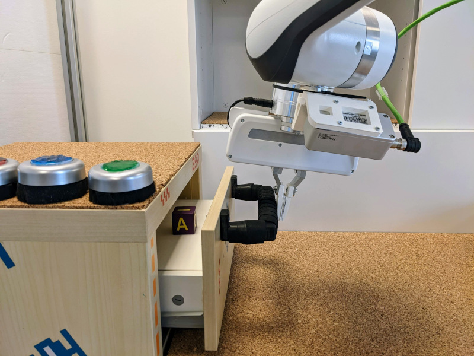 |
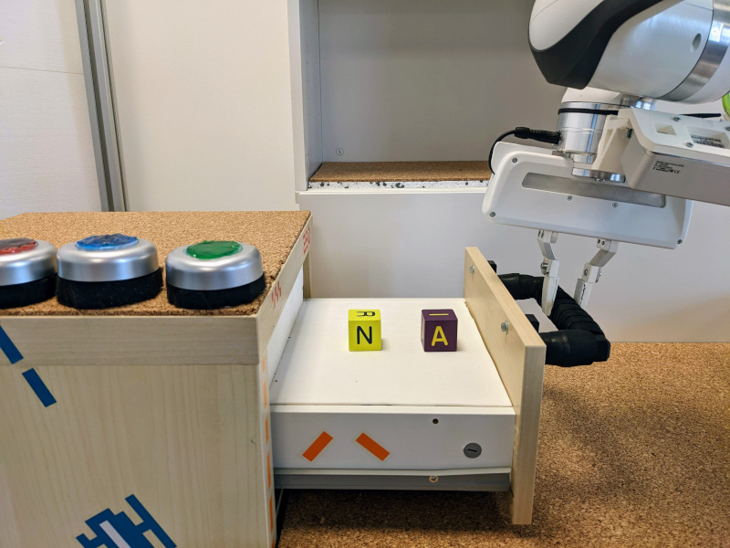 |
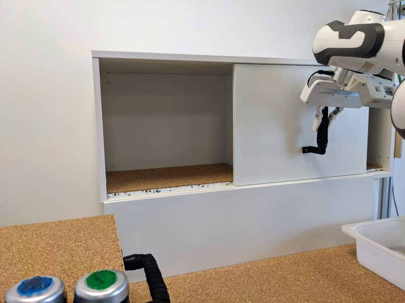 |
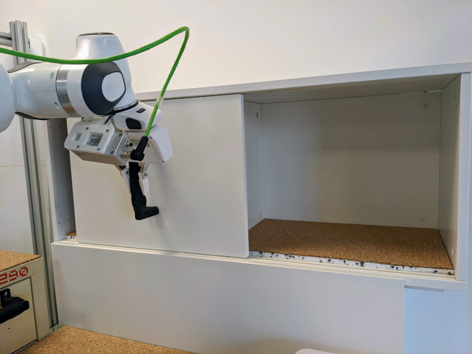 |
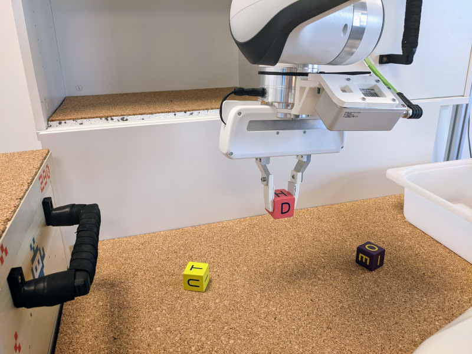 |
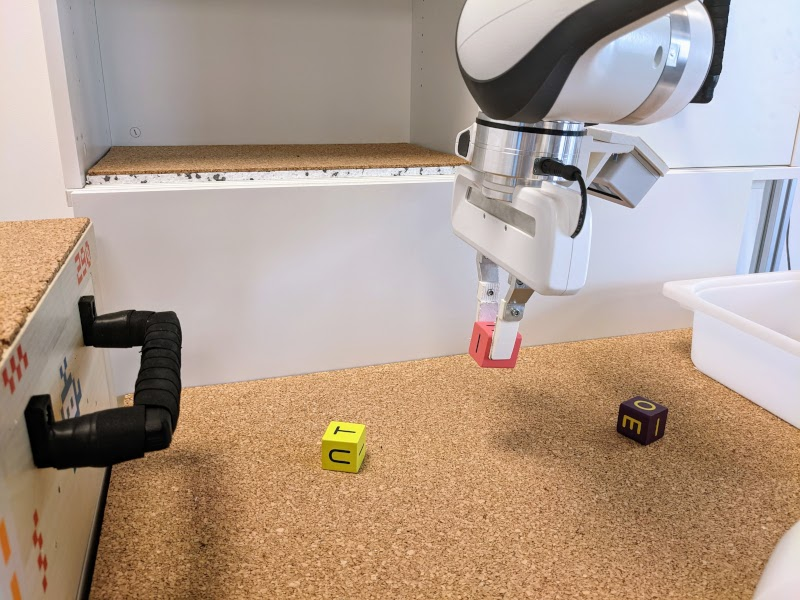 |
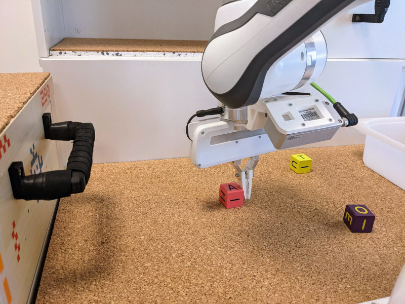 |
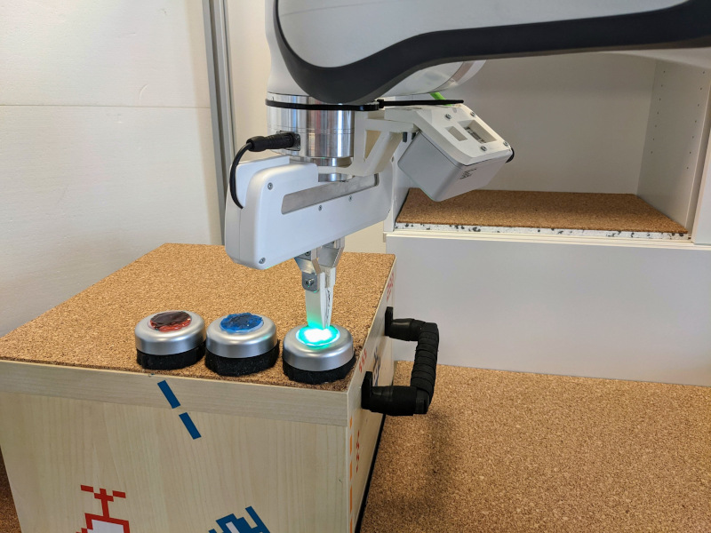 |
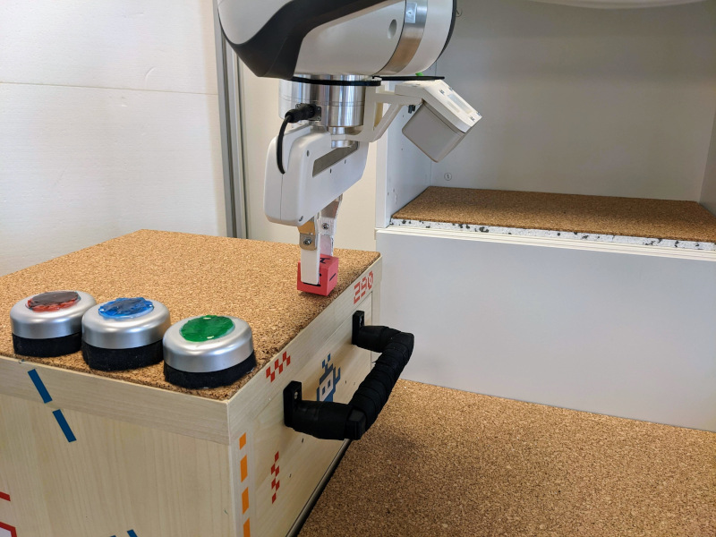 |
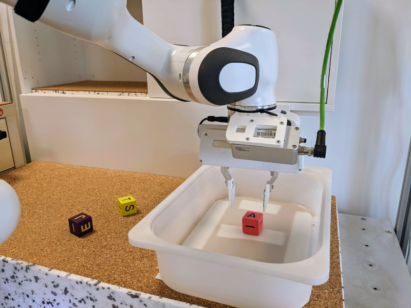 |
나아가 목표 이미지에 작업을 수행하는 로봇이 포함되어 있지 않고, 작업이 수행된 후 말단 장치(end effector)가 다른 위치에 나타나는 경우(표 3 참조)에 단일 작업을 수행하는 모델의 능력을 테스트한다. 각 작업에 대해 50회의 롤아웃을 실행한다. 이러한 더 어려운 작업은 장면의 변화에 대한 추론을 요구하며, 각 롤아웃이 학습 중에 보지 못한 서로 다른 목표 이미지를 사용하므로 일반화 성능을 추가로 평가한다. 소거 연구를 통해, 우리 프레임워크에 부정적 목표를 포함하는 것이 이 시나리오에서 좋은 성능을 얻는 데 크게 기여하여, 최종 말단 장치 위치만 모방하는 것이 아니라 전체 장면 구성을 달성하도록 완화해 준다는 것을 알 수 있다. TACO-RL이 베이스라인을 능가할 수 있음을 확인했는데, 이는 우리 모델의 스킬 체이닝 능력과 상위 수준 정책의 크리틱(critic) 네트워크를 학습시키는 데 사용된 부정적 목표 마이닝(negative goal mining)을 통해 설명될 수 있다. 반면, CQL+HER은 원하는 목표 이미지를 달성하지 못하며, LMP는 환경의 변화를 무시하고 말단 장치 위치에 강한 편향(bias)을 보인다. RIL은 작업을 달성하는 데 필요한 중간 잠재 하위 목표(intermediate latent sub-goals)를 상상할 수 있어 말단 장치 위치에 대한 편향을 줄이지만, 여전히 우리 방법보다 낮은 정확도를 보인다.
| Method \Task | Place block in drawer | Open drawer | Move slider left | Turn on lightbulb |
|---|---|---|---|---|
| Ours | 94% | 87.3% | 79.3% | 94% |
| No neg. goals | 77.3% | 37.3% | 13.3% | 9.3% |
| 50% neg. goals | 88% | 58.7% | 39.3% | 92% |
| RIL [32] | 74.67% | 87.3% | 77% | 92.7% |
| LMP [13] | 78.6% | 12% | 12% | 10% |
| CQL+HER | 67.6% | 8.6% | 17.3% | 4% |
5.3 실제 로봇 실험
실제 환경 실험을 위해, 여러 목표 조건부 작업을 수행할 수 있는 단일 정책을 학습시키는 것을 연구한다. 작업의 예시는 그림 4에 나와 있다. 학습 데이터셋을 생성하기 위해 VR 컨트롤러로 Franka Emika Panda 로봇 팔을 원격 조작하여 녹화한 9시간 분량의 플레이 데이터를 수집했다. 장면에서의 자가 가림(self-occlusion)을 방지하기 위해, 이 모델들은 그리퍼 카메라의 RGB 이미지도 추가 입력으로 받는다. 오프라인 데이터셋으로 모델들을 학습시킨 후, 여러 목표 이미지와 시작 위치를 사용하여 각 작업당 20회의 롤아웃을 수행했다. TACO-RL은 베이스라인들을 일관되게 능가할 수 있었으며, 특히 목표 이미지에서 멀리 떨어진 시작 위치에서 평가되거나 장기적인 추론이 필요한 경우에 그러했다. 각 모델의 성공률은 표 4에 기록하였다.
| Task \Method | Ours | LMP [13] | CQL+HER |
|---|---|---|---|
| Lift the block on top of the drawer | 60% | 60% | 20% |
| Lift the block inside the drawer | 65% | 50% | 15% |
| Lift the block from the slider | 60% | 30% | 10% |
| Lift the block from the container | 65% | 60% | 20% |
| Lift the block from the table | 70% | 70% | 30% |
| Place the block on top of the drawer | 60% | 50% | 30% |
| Place the block inside the drawer | 70% | 40% | 20% |
| Place the block in the slider | 30% | 0% | 0% |
| Place the block in the container | 65% | 30% | 15% |
| Stack the blocks | 30% | 0% | 0% |
| Unstack the blocks | 30% | 10% | 0% |
| Rotate block left | 70% | 40% | 10% |
| Rotate block right | 70% | 50% | 15% |
| Push block left | 60% | 50% | 20% |
| Push block right | 60% | 50% | 10% |
| Close drawer | 90% | 70% | 20% |
| Open drawer | 70% | 50% | 10% |
| Move slider left | 75% | 30% | 0% |
| Move slider right | 70% | 10% | 0% |
| Turn red light on | 60% | 30% | 0% |
| Turn red light off | 50% | 20% | 0% |
| Turn green light on | 70% | 60% | 10% |
| Turn green light off | 65% | 50% | 10% |
| Turn blue light on | 50% | 50% | 5% |
| Turn blue light off | 50% | 30% | 10% |
| Average over tasks | 61% | 40% | 11% |
우리는 또한 우리 접근법이 장기 지평 작업으로 확장될 수 있는지 검증하기 위해 실제 로봇으로 순차적 작업을 수행하는 테스트를 진행했다. 이 실험을 위해 로봇이 실행하는 각 작업마다 하나의 목표 이미지를 사용한다. 다양한 작업의 다양성과 서로 다른 방법들의 장기 지평 능력을 보여주는 정성적 결과는 보충 영상을 참조하라. 라벨이 없는 플레이 데이터로부터 완전히 학습된 우리 에이전트는 작업 간에 전환하는 방법과 목표 이미지에 묘사된 상태에 도달하는 방법을 추론함으로써 이러한 순차적 작업의 대부분을 성공적으로 수행할 수 있다. 자세한 내용은 부록 F.3에 나와 있다.
마지막으로, 블록을 들어 올려 원하는 위치로 이동하기, 블록을 다른 블록 위에 쌓기 등 단일 목표 이미지를 사용하여 복잡한 작업을 수행하는 TACO-RL을 평가한다. 이러한 작업은 로봇이 말단 장치 위치만 모방할 경우 장면에서 객체들이 올바르게 배치되지 않으므로 에이전트가 장기 지평 방식으로 추론할 것을 요구한다. 학습된 잠재 행동들을 함께 엮음으로써(stitching), 우리 모델은 이러한 작업들을 일관되게 수행할 수 있었다.
6 결론 및 한계점
본 논문에서는 비구조화된 플레이 데이터로부터 추정된 잠재 계획 표현(latent plan representation)을 활용하여 이 잠재 계획 공간에서 작동하는 상위 수준 오프라인 강화학습 정책의 지평을 효과적으로 제한하는 과업 무관 오프라인 강화학습(Task-Agnostic Offline Reinforcement Learning, TACO-RL)을 제안했다. 순차적인 다단계 작업을 모방 학습으로 해결되는 암묵적 하위 작업의 덩어리(chunk)로 분할함으로써, TACO-RL은 시뮬레이션 및 실제 로봇 제어 작업 모두에서 최첨단 모방 학습 및 오프라인 강화학습 베이스라인에 비해 성능이 최대 한 자릿수까지 향상됨을 보여주었다.
TACO-RL은 매우 유능하지만 몇 가지 한계점이 존재한다. 에이전트에게 작업을 지정하려면 테스트 시점에 현재 장면과 일치하는 적절한 목표 이미지를 제공해야 한다. 게다가 서로 다른 시간 지평을 가진 스킬들을 시퀀싱할 때 작업 진행 상황을 추적하는 것이 유용할 수 있다. 한계점에 대해서는 부록 H에서 더 자세히 논의한다. 그러나 전반적으로, 우리는 로봇 러닝을 확장하는 방향으로 모방 학습과 오프라인 강화학습 방법이 융합되는 것에 대해 고무되어 있다.
감사의 말
본 연구는 독일 연방교육연구부(BMBF)의 지원(계약 번호 01IS18040B-OML)을 일부 받아 수행되었습니다.
References
- Mnih et al. [2015] V. Mnih, K. Kavukcuoglu, D. Silver, A. A. Rusu, J. Veness, M. G. Bellemare, A. Graves, M. Riedmiller, A. K. Fidjeland, G. Ostrovski, et al. Human-level control through deep reinforcement learning. Nature, 518(7540):529–533, 2015.
- Silver et al. [2018] D. Silver, T. Hubert, J. Schrittwieser, I. Antonoglou, M. Lai, A. Guez, M. Lanctot, L. Sifre, D. Kumaran, T. Graepel, et al. A general reinforcement learning algorithm that masters chess, shogi, and go through self-play. Science, 362(6419):1140–1144, 2018.
- Riedmiller et al. [2018] M. Riedmiller, R. Hafner, T. Lampe, M. Neunert, J. Degrave, T. van de Wiele, V. Mnih, N. Heess, and J. T. Springenberg. Learning by playing solving sparse reward tasks from scratch. In J. Dy and A. Krause, editors, Proceedings of the 35th International Conference on Machine Learning, volume 80 of Proceedings of Machine Learning Research, pages 4344–4353. PMLR, 10–15 Jul 2018.
- Haarnoja et al. [2019] T. Haarnoja, S. Ha, A. Zhou, J. Tan, G. Tucker, and S. Levine. Learning to walk via deep reinforcement learning. In Proceedings of Robotics: Science and Systems, 2019.
- Levine et al. [2020] S. Levine, A. Kumar, G. Tucker, and J. Fu. Offline reinforcement learning: Tutorial, review, and perspectives on open problems. arXiv preprint arXiv:2005.01643, 2020.
- Kumar et al. [2020] A. Kumar, A. Zhou, G. Tucker, and S. Levine. Conservative q-learning for offline reinforcement learning. Advances in Neural Information Processing Systems, 33:1179–1191, 2020.
- Fujimoto et al. [2019] S. Fujimoto, D. Meger, and D. Precup. Off-policy deep reinforcement learning without exploration. In International Conference on Machine Learning, pages 2052–2062. PMLR, 2019.
- Fujimoto and Gu [2021] S. Fujimoto and S. Gu. A minimalist approach to offline reinforcement learning. In Advances in Neural Information Processing Systems, 2021.
- Yu et al. [2020] T. Yu, G. Thomas, L. Yu, S. Ermon, J. Y. Zou, S. Levine, C. Finn, and T. Ma. Mopo: Model-based offline policy optimization. In Advances in Neural Information Processing Systems, volume 33, pages 14129–14142. Curran Associates, Inc., 2020.
- Kostrikov et al. [2022] I. Kostrikov, A. Nair, and S. Levine. Offline reinforcement learning with implicit q-learning. In International Conference on Learning Representations, 2022.
- Kidambi et al. [2020] R. Kidambi, A. Rajeswaran, P. Netrapalli, and T. Joachims. Morel: Model-based offline reinforcement learning. In NeurIPS, 2020.
- Chebotar et al. [2021] Y. Chebotar, K. Hausman, Y. Lu, T. Xiao, D. Kalashnikov, J. Varley, A. Irpan, B. Eysenbach, R. C. Julian, C. Finn, et al. Actionable models: Unsupervised offline reinforcement learning of robotic skills. In International Conference on Machine Learning, pages 1518–1528. PMLR, 2021.
- Lynch et al. [2020] C. Lynch, M. Khansari, T. Xiao, V. Kumar, J. Tompson, S. Levine, and P. Sermanet. Learning latent plans from play. In Conference on robot learning, pages 1113–1132. PMLR, 2020.
- Kumar et al. [2022] A. Kumar, J. Hong, A. Singh, and S. Levine. Should i run offline reinforcement learning or behavioral cloning? In International Conference on Learning Representations, 2022.
- Florence et al. [2021] P. Florence, C. Lynch, A. Zeng, O. A. Ramirez, A. Wahid, L. Downs, A. Wong, J. Lee, I. Mordatch, and J. Tompson. Implicit behavioral cloning. In Conference on Robot Learning, 2021.
- Mees et al. [2022] O. Mees, L. Hermann, E. Rosete-Beas, and W. Burgard. Calvin: A benchmark for language-conditioned policy learning for long-horizon robot manipulation tasks. IEEE Robotics and Automation Letters (RA-L), 7(3):7327–7334, 2022.
- Kostrikov et al. [2021] I. Kostrikov, R. Fergus, J. Tompson, and O. Nachum. Offline reinforcement learning with fisher divergence critic regularization. In ICML, volume 139 of Proceedings of Machine Learning Research, pages 5774–5783. PMLR, 2021.
- Gupta et al. [2022] A. Gupta, C. Lynch, B. Kinman, G. Peake, S. Levine, and K. Hausman. Demonstration-bootstrapped autonomous practicing via multi-task reinforcement learning. arXiv, 2022.
- Peng et al. [2019] X. B. Peng, M. Chang, G. Zhang, P. Abbeel, and S. Levine. Mcp: Learning composable hierarchical control with multiplicative compositional policies. Advances in Neural Information Processing Systems, 32, 2019.
- Bacon et al. [2017] P.-L. Bacon, J. Harb, and D. Precup. The option-critic architecture. In Proceedings of the AAAI Conference on Artificial Intelligence, volume 31, 2017.
- Rybkin et al. [2021] O. Rybkin, C. Zhu, A. Nagabandi, K. Daniilidis, I. Mordatch, and S. Levine. Model-based reinforcement learning via latent-space collocation. In ICML, volume 139 of Proceedings of Machine Learning Research, pages 9190–9201. PMLR, 2021.
- Pertsch et al. [2020a] K. Pertsch, O. Rybkin, F. Ebert, S. Zhou, D. Jayaraman, C. Finn, and S. Levine. Long-horizon visual planning with goal-conditioned hierarchical predictors. In NeurIPS, 2020a.
- Pertsch et al. [2020b] K. Pertsch, O. Rybkin, J. Yang, S. Zhou, K. G. Derpanis, K. Daniilidis, J. J. Lim, and A. Jaegle. Keyframing the future: Keyframe discovery for visual prediction and planning. In L4DC, volume 120 of Proceedings of Machine Learning Research, pages 969–979. PMLR, 2020b.
- Nair and Finn [2020] S. Nair and C. Finn. Hierarchical foresight: Self-supervised learning of long-horizon tasks via visual subgoal generation. In International Conference on Learning Representations,, 2020.
- Jayaraman et al. [2019] D. Jayaraman, F. Ebert, A. A. Efros, and S. Levine. Time-agnostic prediction: Predicting predictable video frames. In International Conference on Learning Representations, 2019.
- Fang et al. [2019] K. Fang, Y. Zhu, A. Garg, S. Savarese, and L. Fei-Fei. Dynamics learning with cascaded variational inference for multi-step manipulation. In CoRL, volume 100 of Proceedings of Machine Learning Research, pages 42–52. PMLR, 2019.
- Ichter et al. [2021] B. Ichter, P. Sermanet, and C. Lynch. Broadly-exploring, local-policy trees for long-horizon task planning. In CoRL, volume 164 of Proceedings of Machine Learning Research, pages 59–69. PMLR, 2021.
- Shi et al. [2022] L. X. Shi, J. J. Lim, and Y. Lee. Skill-based model-based reinforcement learning. arXiv preprint arXiv:2207.07560, 2022.
- Pertsch et al. [2020] K. Pertsch, Y. Lee, and J. J. Lim. Accelerating reinforcement learning with learned skill priors. In CoRL, volume 155 of Proceedings of Machine Learning Research, pages 188–204. PMLR, 2020.
- Fang et al. [2022] K. Fang, P. Yin, A. Nair, and S. Levine. Planning to practice: Efficient online fine-tuning by composing goals in latent space. arXiv preprint arXiv:2205.08129, 2022.
- Nasiriany et al. [2019] S. Nasiriany, V. Pong, S. Lin, and S. Levine. Planning with goal-conditioned policies. In NeurIPS, pages 14814–14825, 2019.
- Gupta et al. [2019] A. Gupta, V. Kumar, C. Lynch, S. Levine, and K. Hausman. Relay policy learning: Solving long-horizon tasks via imitation and reinforcement learning. In CoRL, volume 100 of Proceedings of Machine Learning Research, pages 1025–1037. PMLR, 2019.
- Nachum et al. [2018] O. Nachum, S. Gu, H. Lee, and S. Levine. Data-efficient hierarchical reinforcement learning. In NeurIPS, pages 3307–3317, 2018.
- Shankar and Gupta [2020] T. Shankar and A. Gupta. Learning robot skills with temporal variational inference. In International Conference on Machine Learning, pages 8624–8633. PMLR, 2020.
- Borja-Diaz et al. [2022] J. Borja-Diaz, O. Mees, G. Kalweit, L. Hermann, J. Boedecker, and W. Burgard. Affordance learning from play for sample-efficient policy learning. In ICRA, Philadelphia, USA, 2022.
- Mandlekar et al. [2020] A. Mandlekar, D. Xu, R. Martín-Martín, S. Savarese, and L. Fei-Fei. GTI: learning to generalize across long-horizon tasks from human demonstrations. In Robotics: Science and Systems, 2020.
- Xu et al. [2018] D. Xu, S. Nair, Y. Zhu, J. Gao, A. Garg, L. Fei-Fei, and S. Savarese. Neural task programming: Learning to generalize across hierarchical tasks. In ICRA, pages 1–8. IEEE, 2018.
- Shah et al. [2021] D. Shah, P. Xu, Y. Lu, T. Xiao, A. T. Toshev, S. Levine, et al. Value function spaces: Skill-centric state abstractions for long-horizon reasoning. In International Conference on Learning Representations, 2021.
- Singh et al. [2021] A. Singh, H. Liu, G. Zhou, A. Yu, N. Rhinehart, and S. Levine. Parrot: Data-driven behavioral priors for reinforcement learning. In International Conference on Learning Representations, 2021.
- Ghosh et al. [2019] D. Ghosh, A. Gupta, and S. Levine. Learning actionable representations with goal conditioned policies. In ICLR (Poster). OpenReview.net, 2019.
- Nachum et al. [2020] O. Nachum, M. Ahn, H. Ponte, S. S. Gu, and V. Kumar. Multi-agent manipulation via locomotion using hierarchical sim2real. In Conference on Robot Learning, pages 110–121. PMLR, 2020.
- Hausman et al. [2018] K. Hausman, J. T. Springenberg, Z. Wang, N. Heess, and M. Riedmiller. Learning an embedding space for transferable robot skills. In International Conference on Learning Representations, 2018.
- Mees et al. [2020] O. Mees, M. Merklinger, G. Kalweit, and W. Burgard. Adversarial skill networks: Unsupervised robot skill learning from videos. In ICRA, Paris, France, 2020.
- Ajay et al. [2021] A. Ajay, A. Kumar, P. Agrawal, S. Levine, and O. Nachum. OPAL: offline primitive discovery for accelerating offline reinforcement learning. In International Conference on Learning Representations, 2021.
- Wang et al. [2022] L. Wang, X. Meng, Y. Xiang, and D. Fox. Hierarchical policies for cluttered-scene grasping with latent plans. IEEE Robotics and Automation Letters, 2022.
- Kingma and Welling [2013] D. P. Kingma and M. Welling. Auto-encoding variational bayes. arXiv preprint arXiv:1312.6114, 2013.
- Higgins et al. [2017] I. Higgins, L. Matthey, A. Pal, C. P. Burgess, X. Glorot, M. M. Botvinick, S. Mohamed, and A. Lerchner. beta-vae: Learning basic visual concepts with a constrained variational framework. In International Conference on Learning Representations, 2017.
- Hafner et al. [2020] D. Hafner, T. P. Lillicrap, M. Norouzi, and J. Ba. Mastering atari with discrete world models. In International Conference on Learning Representations, 2020.
- Mees et al. [2022] O. Mees, L. Hermann, and W. Burgard. What matters in language conditioned robotic imitation learning over unstructured data. IEEE Robotics and Automation Letters (RA-L), 7(4):11205–11212, 2022.
- Andrychowicz et al. [2017] M. Andrychowicz, F. Wolski, A. Ray, J. Schneider, R. Fong, P. Welinder, B. McGrew, J. Tobin, O. Pieter Abbeel, and W. Zaremba. Hindsight experience replay. Advances in neural information processing systems, 30, 2017.
- Tian et al. [2021] S. Tian, S. Nair, F. Ebert, S. Dasari, B. Eysenbach, C. Finn, and S. Levine. Model-based visual planning with self-supervised functional distances. In International Conference on Learning Representations, 2021.
- Salimans et al. [2017] T. Salimans, A. Karpathy, X. Chen, and D. P. Kingma. Pixelcnn++: Improving the pixelcnn with discretized logistic mixture likelihood and other modifications. arXiv preprint arXiv:1701.05517, 2017.
- Nair et al. [2022] S. Nair, A. Rajeswaran, V. Kumar, C. Finn, and A. Gupta. R3m: A universal visual representation for robot manipulation. arXiv preprint arXiv:2203.12601, 2022.
- Fu et al. [2020] J. Fu, A. Kumar, O. Nachum, G. Tucker, and S. Levine. D4rl: Datasets for deep data-driven reinforcement learning. arXiv preprint arXiv:2004.07219, 2020.
- Mees and Burgard [2021] O. Mees and W. Burgard. Composing pick-and-place tasks by grounding language. In Proceedings of the International Symposium on Experimental Robotics (ISER), La Valletta, Malta, 2021.
부록
A 원격 조작 인터페이스
A.1 시뮬레이션
시뮬레이션 데이터를 수집하기 위해 인간 원격 조종자는 HTC VIVE Pro 헤드셋을 사용하여 CALVIN 환경을 시각화하고, 컨트롤러를 사용하여 플레이 데이터를 수집한다. 애플리케이션 메뉴 버튼을 클릭하면 플레이 데이터 에피소드 기록을 시작하는 신호가 전송되며, 이때부터 로봇 팔은 컨트롤러의 위치와 방향을 추적하여 이를 그리퍼 말단 효과기(end effector)의 위치와 방향으로 매핑한다.
| Control | Function |
|---|---|
| Application menu | Starts or finishes recording a play data episode |
| Trigger | When pressed it closes the gripper end effector, otherwise it opens |
A.2 실제 세계
실제 세계의 경우 HTC VIVE Pro 컨트롤러를 사용한다. 원격 조종을 시작할 때, 그립 버튼을 클릭하고 양의 축 방향으로 이동하여 X축 위치를 보정(calibration)한 다음, 애플리케이션 메뉴를 클릭하여 보정 이동이 완료되었음을 알린다. 이 보정 절차를 통해 로봇 말단 효과기의 전역 좌표가 기록될 기준 좌표계를 정의할 수 있다. 이 설정에서 원격 조종자는 로봇과 동일한 방향으로 테이블을 마주하므로, 컨트롤러가 오른쪽으로 이동하면 로봇도 오른쪽으로 이동한다. 이러한 방식으로 컨트롤러의 위치를 원하는 로봇 팔 말단 효과기의 3D 위치를 정의하는 절대 액션(absolute action)으로 매핑할 수 있다. 또한, 로봇 팔의 움직임을 활성화하려면 그립 버튼을 지속적으로 누르고 있어야 하는데, 이는 의도치 않은 손 추적을 피하고 발생 가능한 사고를 예방하기 위함이다.
| Control | Function |
|---|---|
| Grip | Starts calibration; enables robot movement |
| Application menu | Finishes calibration; Starts or finishes recording a play data episode |
| Trigger | When pressed it closes the gripper end effector, otherwise it opens |
B 실험 설정 세부사항
실제 및 시뮬레이션 로봇 환경 모두에 대해 다음과 같은 7차원 액션 스키마를 사용한다:
액션 차원은 3D 공간에서 말단 효과기 위치의 변화에 대응한다. 액션 차원은 로봇의 베이스 프레임에서 말단 효과기 방향의 변화를 지정한다. 이 6개 차원은 모두 사이의 연속적인 값을 허용한다. 마지막으로, 명령은 두 개의 이산적인 값 및 를 가질 수 있다. 이 차원에서 의 액션은 로봇에게 그리퍼를 열도록 명령하고, 은 그리퍼를 닫고자 함을 나타낸다.
B.1 데이터 수집 세부사항
실제 세계 로봇의 경우, Franka Emika Panda 로봇 팔을 원격 조종하여 9시간 분량의 플레이 데이터를 수집했으며, 여기서도 3D 테이블탑 환경에서 물체를 조작한다. 이 환경은 열고 닫을 수 있는 서랍이 있는 테이블로 구성된다. 또한 환경에는 나무 베이스 위에 슬라이딩 도어가 포함되어 있어 말단 효과기가 손잡이에 도달할 수 있다. 서랍 위에는 식별이 가능하도록 녹색, 청색, 주황색 코팅이 된 3개의 LED 버튼이 있으며, 기록된 플레이 데이터에서는 녹색 코팅이 된 LED 버튼하고만 상호작용했다. LED 버튼을 클릭하면 조명의 상태가 토글된다. 추가로, 글자가 적힌 세 가지 색상의 블록이 위에 놓여 있다. 데이터 수집 및 설정의 시각화는 그림 5에서 확인할 수 있다.
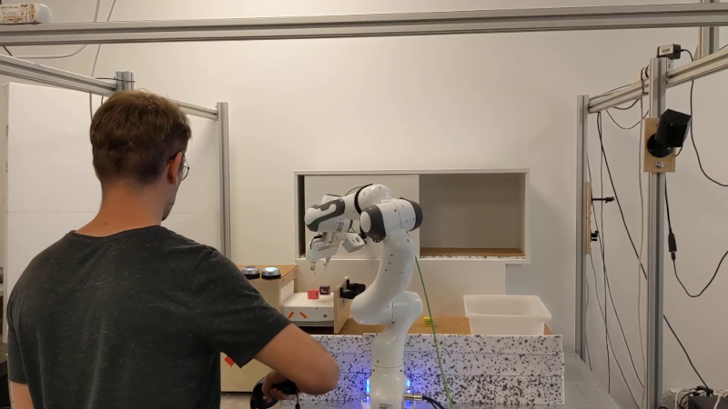
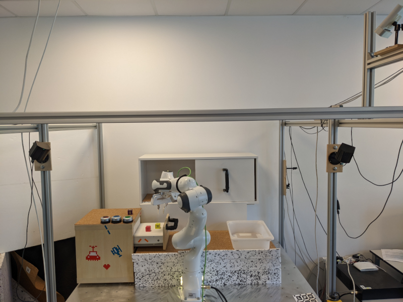
매 타임스텝마다 로봇의 고유 감각(proprioceptive) 센서 측정값과 Azure Kinect 카메라에서 얻은 크기의 정적 RGB-D 이미지, FRAMOS 산업용 깊이 카메라 D435e에서 출력되는 크기의 그리퍼 RGB-D 이미지, 그리고 명령된 절대 액션을 기록한다.
본 프로젝트에서는 관측(observation)의 일부로 정적 RGB 이미지와 그리퍼 카메라 RGB 이미지만을 사용한다. 입력 관측은 그림 6에서 시각화하여 보여준다.
실제 적용 시, 이 방식으로 계산된 상대 액션을 재현하는 것이 고유 감각 센서의 노이즈가 심한 측정값으로부터 계산했을 때보다 더 나은 성능을 보였기 때문에, 타임스텝 와 의 절대 액션 변화로부터 상대 액션 을 추출한다.
데이터는 30 Hz로 수집되지만, 프레임 간 말단 효과기 위치의 변화가 상대적으로 매우 작기 때문에 처리된 데이터를 15 Hz의 주파수로 다운샘플링한다.
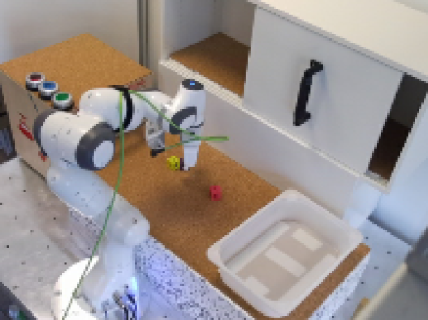
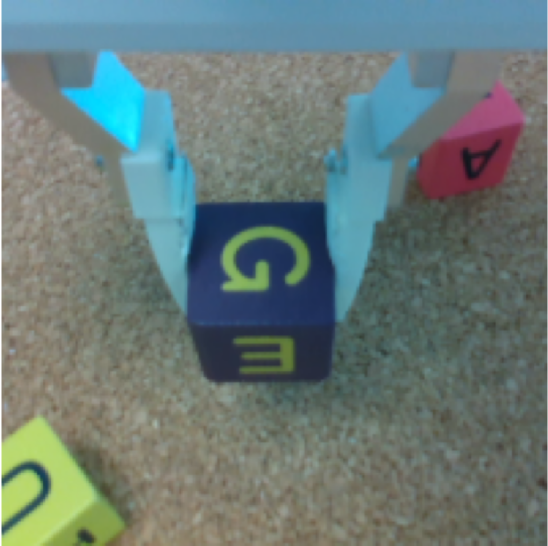
C 네트워크 아키텍처
C.1 TACO-RL 하이퍼파라미터
저수준 정책(Low-Level Policy): 저수준 정책을 학습시키기 위해 분산 데이터 병렬(Distributed Data Parallel) 방식을 사용하여 개의 GPU로 모델을 훈련했다. 훈련 전반에 걸쳐, 우리는 길이 과 사이의 윈도우를 무작위로 샘플링하고, 마지막 관측과 말단 효과기를 동일한 상태로 유지하는 것에 해당하는 액션을 반복하여 최대 길이인 에 도달할 때까지 패딩을 적용한다. 저수준 정책 아키텍처는 그림 7에서 시각화하여 보여준다. 추가적인 하이퍼파라미터는 아래에 나열되어 있다:
-
•
배치 크기(Batch size):
-
•
잠재 계획 차원(Latent plan dim):
-
•
학습률(Learning rate):
-
•
KL 손실 가중치 은 이며 KL 밸런싱(KL balancing)을 사용한다.
이러한 하이퍼파라미터는 상위 수준 정책을 학습할 때 잠재 계획 이 행동(action)으로 사용되므로, 상위 수준 정책의 행동 공간을 강화 학습에 다루기 쉬운 수준으로 만들기 위해 선택되었다.
상위 수준 정책: 하위 수준 정책과 마찬가지로, 분산 데이터 병렬(Distributed Data Parallel)을 사용하여 개의 GPU로 모델을 학습시켰다. 아키텍처는 그림 8에 시각화되어 있다. 다음 하이퍼파라미터를 사용한다:
-
•
배치 크기:
-
•
학습률 Q-함수: , 정책: ,
-
•
타깃 네트워크 업데이트 속도:
-
•
Q-함수 업데이트 대비 정책 업데이트 비율:
-
•
Q-함수 개수: 2개의 Q-함수, Q-함수 백업 및 정책 업데이트에 min(Q1, Q2) 사용
-
•
자동 엔트로피 튜닝: , 타깃 엔트로피는 로 설정
-
•
CQL 버전: (결정론적 백업 사용)
-
•
CQL의 : (의 비라그랑주 버전을 사용함)
-
•
추정에 사용된 부적 예시(negative sample) 수:
-
•
초기 BC 웜스타트 에포크:
-
•
할인 인자(Discount factor):
모델 성능이 하이퍼파라미터 선택의 미세한 변화에 강건하다는 점을 언급하는 것이 중요하다.
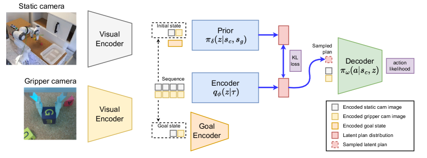
목표 샘플링 전략: 모든 실험에 대해 동일한 기하 분포 확률 을 사용한다. 이 하이퍼파라미터가 에 가까워질수록 더 긴 수평선(horizon)의 과제를 달성하기 위해 계획들을 이어 붙일 수 있게 되지만, 보상 를 받는 빈도가 낮아져 최적화 문제가 더 어려워진다. 시뮬레이션과 실제 환경 모두의 3D 테이블탑 환경에 대해, 우리는 시간의 비율로 정적 예시(미래의 목표)를 샘플링하고, 비율로 부적 예시(유사한 고유 감각 상태를 가진 목표)를 샘플링한다.
C.2 인코더
인코더(사후 분포(Posterior)라고도 함) 는 상태-행동 쌍의 궤적 을 잠재 공간(latent space)의 분포로 인코딩하고 해당 분포의 파라미터를 출력한다. 본 연구의 경우, 를 트랜스포머(transformer) 네트워크로 표현하며, 이는 을 입력으로 받아 가우시안 분포의 파라미터()를 출력한다. 우리는 비전 인코더를 사용하여 시각적 관측 시퀀스를 인코딩한다. 그런 다음, 경험 윈도우(experience window)가 시간적 정보를 가질 수 있도록 위치 임베딩(positional embeddings)을 추가한다. 마지막으로, 시간적 맥락이 반영된 전역 비디오 표현(temporally contextualized global video representations)을 학습하기 위해 그 결과를 트랜스포머에 입력한다. 특히, 우리의 트랜스포머 인코더 아키텍처는 개의 블록, 개의 셀프 어텐션 헤드(self-attention heads), 그리고 의 은닉 차원(hidden dimension)으로 구성된다.
C.3 디코더(Decoder)
디코더(하위 수준 정책(Low-Level Policy)이라고도 함) 는 잠재 조건부 정책(latent-conditioned policy)이다. 이는 상태와 잠재 벡터가 주어졌을 때 에서의 행동의 조건부 로그 우도(conditional log-likelihood)를 최대화한다. 본 구현에서 우리는 이를 순환 신경망(recurrent neural network, RNN)으로 매개변수화하며, 이 네트워크는 현재 상태와 샘플링된 잠재 계획을 입력으로 받아 이산화된 로지스틱 혼합 분포(discretized logistic mixture distribution) [52]의 파라미터를 출력한다.
실험을 위해, 우리는 각각 의 은닉 차원을 포함하는 개의 RNN 레이어를 사용한다. 이산화된 로지스틱 혼합 분포에서는 개의 분포를 사용하여 차원당 개의 클래스를 예측한다. 우리는 처음 개 차원이 과 사이의 범위에서 연속적이고, 마지막 차원은 교차 엔트로피 손실(cross entropy loss)에 의해 최적화되는 이산값인 그리퍼(gripper) 행동을 포함하는 행동을 예측한다.
C.4 사전 분포(Prior)
사전 분포 는 초기 상태와 목표 상태로부터 궤적 의 인코딩된 분포를 예측하고자 한다. 본 구현에서는 초기 상태와 목표 상태의 임베딩된 표현을 입력으로 받아 가우시안 분포의 파라미터()를 예측하는 피드포워드 신경망(feed-forward neural network)을 사용한다. 사전 분포 네트워크는 크기가 인 개의 완전 연결 레이어(fully connected layers)로 구성된다.
C.5 비전 인코더(Visual Encoder)
현재 상태의 임베딩된 표현을 얻기 위해, 우리는 각 입력 모달리티 관측값을 합성곱 인코더(convolutional encoder)에 통과시키고 모든 관측 모달리티의 임베딩된 표현을 연결(concatenating)하여 후기 융합(late fusion)을 수행한다.
시뮬레이션
시뮬레이션에서는 RGB 정적 이미지만을 입력으로 사용하며, 이는 3개의 합성곱 레이어와 공간 소프트맥스(spatial softmax) 레이어를 가진 기존 Play LMP 구현에서 제안된 것과 동일한 합성곱 인코더를 통과한다. 그 표현을 평탄화(flattening)한 후, 의 임베딩된 잠재 크기를 출력하는 2개의 완전 연결 레이어에 입력된다.
실세계
실세계의 경우, RGB 정적 이미지와 RGB 그리퍼 이미지를 모두 입력으로 사용한다. RGB 그리퍼 이미지는 기존 Play LMP 구현에서와 같이 합성곱 인코더로 보내지며, 임베딩된 잠재 크기는 이다. RGB 정적 이미지의 경우 가중치가 고정된 사전 학습된 R3M [53] Resnet18 네트워크를 사용하였으며, 이후 은닉 크기가 이고 임베딩된 잠재 크기가 인 개의 피드포워드 네트워크에 통과시켰다.
C.6 목표 인코더(Goal Encoder)
우리는 목표 관측값을 비전 인코더에 통과시켜 조밀한 지각 표현(compact perceptual representation)을 얻는다. 그런 다음, 크기가 인 개의 은닉 레이어와 해당 표현을 개의 잠재 특징(latent features)으로 매핑하는 출력 레이어를 사용한다.
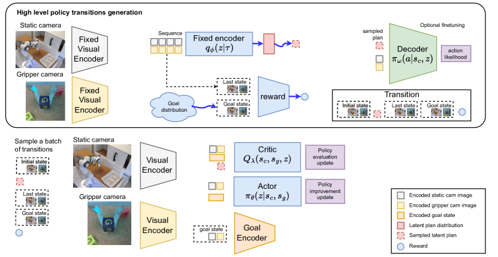
C.7 액터(Actor)
상위 수준 정책을 학습하기 위해 우리는 CQL을 사용한다. 특히, 액터 네트워크는 사전 학습된 가중치를 좋은 초기화 값으로 사용할 수 있으므로 사전 분포 와 동일한 네트워크 아키텍처를 사용한다. 이는 크기가 인 개의 은닉 완전 연결 레이어와 잠재 계획 가우시안 분포의 평균 및 표준편차를 예측하는 출력 레이어를 가진다.
C.8 크리틱(Critic)
크리틱 네트워크는 현재 상태의 임베딩된 표현, 인코딩된 목표 상태, 그리고 샘플링된 잠재 계획을 입력으로 받는다. 모든 입력은 연결되어 크기가 인 3개의 은닉 레이어를 가진 피드포워드 네트워크와 정책의 기대 상태-행동 가치(state-action value)를 예측하는 출력 레이어를 통과한다.
D 정책 학습 세부 사항
본 섹션에서는 TACO-RL과의 비교에 사용된 베이스라인 모델들의 구체적인 구현 세부 사항을 명시한다.
D.1 놀이 감독형 잠재 모터 계획 (Play-supervised Latent Motor Plans, LMP)
LMP의 재구현을 위해 우리는 C에 기술된 것과 동일한 네트워크 아키텍처를 사용했으며, 원래 구현과의 주요 차이점은 잠재 목표 표현이 디코더가 아닌 사전 확률(prior)에만 추가된다는 점이다. 또한, 모든 차원이 와 사이에 있도록 보장하기 위해 샘플링된 잠재 계획에 변환을 적용한다.
원래 공식과의 또 다른 차이점은 KL 균형화(KL balancing)를 구현한다는 점이다. KL 손실은 양방향이므로, 제대로 훈련되지 않은 사전 확률을 향해 사후 확률(posterior)에 의해 생성된 계획이 정규화되는 것을 방지하고자 한다. 이 문제를 해결하기 위해, Hafner et al. [48]과 유사하게 사전 확률에는 , 사후 확률에는 의 서로 다른 학습률을 사용하여 사후 확률보다 사전 확률에 대해 KL 손실을 더 빠르게 최소화한다.
이러한 아키텍처적 변경은 우리의 구현과 공정한 비교를 수행하고, 우리 방법의 개선이 계획 짜깁기(plan stitching) 능력과 자기지도형 보상 함수 덕분임을 확실히 하기 위해 이루어졌다.
추가적으로, 디코더는 절대 액션 대신 상대 액션을 예측하는데, 이는 전반적으로 더 나은 성능으로 이어지기 때문이다. 우리의 LMP 베이스라인도 동일한 방식으로 구현되었음을 밝혀둔다.
D.2 사후 경험 재플레이를 결합한 보수적 Q-러닝 (Conservative Q-Learning with Hindsight Experience Replay, CQL + HER)
우리는 TACO-RL에서와 동일한 시각 인코더 아키텍처를 사용한다. 크리틱(critic) 네트워크는 256의 은닉 차원을 사용하는 3개의 완전 연결 계층(fully connected layers)으로 구성된다. 액터(actor) 네트워크 또한 256 크기의 3개 완전 연결 계층을 사용하며, 마지막 차원에서 평행 그리퍼를 열고 닫는 이산 액션(discrete action)을 예측한다. 이 마지막 차원은 Gumbel Softmax 분포를 통해 예측된다.
자기지도형 보상 함수는 미래로부터 목표 상태를 샘플링할 때 작은 차이점을 제외하고는 우리 방법과 유사하게 수행된다. CQL 전이는 대신 이므로, 이산 시간 오프셋 에서 목표를 샘플링할 때 타임스텝 의 관측값 대신 타임스텝 의 관측값을 목표로 사용한다. 여기서 는 윈도우 크기이며 은 두 구현 모두에서 동일한 값이다. CQL은 매 타임스텝마다 독립적인 결정을 내려야 하므로 이러한 변경이 필요하다. 반면, 우리의 공식은 TACO-RL이 고수준 액션(잠재 계획)을 예측함으로써 실질적인 에피소드 수평선(horizon)을 줄일 수 있도록 한다.
D.3 릴레이 모방 학습 (Relay Imitation Learning, RIL)
공정한 비교를 위해 TACO-RL에서와 동일한 시각 인코더 아키텍처를 사용한다. 정책 아키텍처의 경우, 먼저 각 정책의 원저자가 제안한 아키텍처인 각각 256개의 유닛과 ReLu 비선형성을 가진 2층 신경망을 시도했다. 이 아키텍처는 우리의 애플리케이션에서 저조한 성능을 보였으며, 각각의 손실 목적 함수가 올바르게 최적화되지 않는 것을 발견하여 더 큰 네트워크를 훈련함으로써 이 문제를 해결했다. 테스트된 구현에서 고수준 및 저수준 정책 모두에 대해 각각 1024개의 유닛을 가진 4층 신경망을 사용했다.
E 데이터 전처리
E.1 시뮬레이션
시뮬레이션에서는 고정 카메라 RGB 이미지만을 입력으로 사용하며, 먼저 RGB 이미지 크기를 에서 로 조정한다. 그 다음 고정 카메라 이미지에 픽셀의 확률적 이미지 이동(stochastic image shift)을 수행하고, 이동된 이미지 위에 각 픽셀을 가장 가까운 픽셀들의 평균으로 대체하는 쌍선형 보간법(bilinear interpolation)을 적용한다. 그 후 대비 , 밝기 , 색조 를 가진 색상 지터 변환 증강(color jitter transform augmentation)을 적용한다. 마지막으로 입력 이미지를 과 사이의 실수 값을 갖는 픽셀로 정규화한다.
E.2 실세계
실세계에서는 고정 카메라 RGB 이미지만 사용할 경우 여러 가려짐(occlusion)이 존재하므로, 관측에 그리퍼 카메라 RGB 이미지도 추가한다.
고정 카메라 RGB 이미지의 경우 의 원래 크기를 사용하며, 대비 , 밝기 , 색조 을 가진 색상 지터 변환을 적용한다. 마지막으로 사전 훈련된 R3M 정규화 값, 즉 와 표준편차 를 사용한다.
그리퍼 카메라 RGB 이미지의 경우 이미지 크기를 에서 로 조정하고, 대비 , 밝기 , 색조 을 가진 색상 지터 변환을 적용한다. 그 다음 픽셀의 확률적 이미지 이동을 수행하고, 이동된 이미지 위에 각 픽셀을 가장 가까운 픽셀들의 평균으로 대체하는 쌍선형 보간법을 적용한다. 마지막으로 입력 이미지를 와 사이의 실수 값을 갖는 픽셀로 정규화한다.
F 추가 결과
F.1 CALVIN
그림 9에 목표 이미지가 작업을 수행하는 로봇 말단 장치(end effector)를 포함할 필요가 없는, CALVIN 환경에서 수행할 수 있는 모든 다양한 작업의 나머지 결과를 추가한다. 각 작업에 대해 50회의 롤아웃(rollout)을 실행한다. 각 롤아웃은 훈련 과정 동안 보지 못한 서로 다른 목표 이미지를 사용한다.
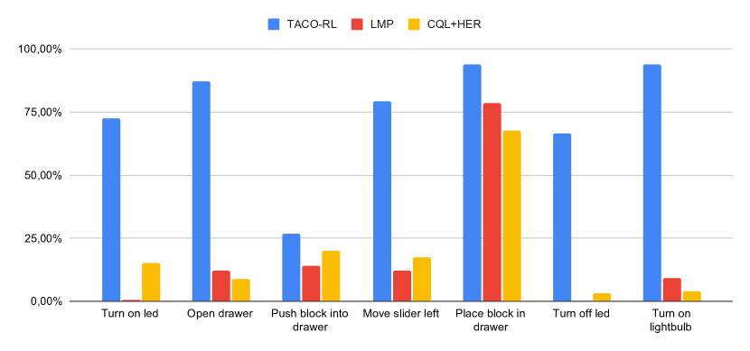
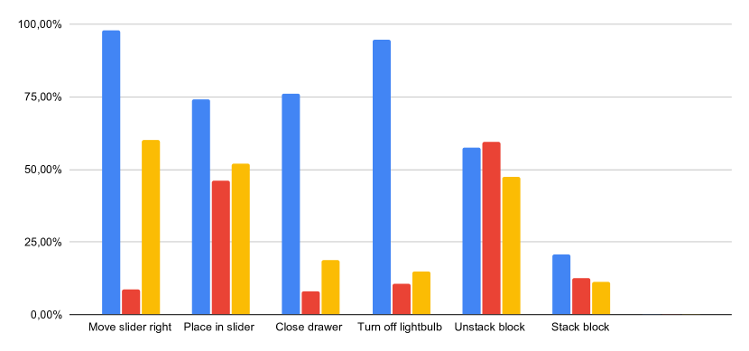
F.2 Maze2D
우리는 또한 D4RL [54]의 Maze2D 환경에서 우리 알고리즘을 평가한다. 이 작업들은 에이전트가 최소한의 단계로 목표에 도달할 수 있도록 모델이 다양한 하위 궤적들을 함께 짜깁기할 수 있는지 테스트하는 단순한 환경으로 설계되었다. TACO-RL의 경우, 데이터셋에서 제공하는 보상을 사용하는 대신 전이를 재라벨링하여 정책을 학습한다. 또한, 시간이 지나도 장면이 변하지 않는다는 점을 고려하여 목표 샘플링 접근 방식에서 긍정적인 예시만 추가한다. 우리는 원하는 목표 위치를 노출함으로써 LMP와 TACO-RL 모두의 롤아웃을 수행한다. TACO-RL은 Table 5에 나타난 바와 같이 동적 계획법(dynamic programming)을 통해 계획을 짜깁기할 수 있기 때문에 LMP와 CQL 모두를 능가한다.
F.3 실제 환경 (Real World)
본 연구의 방법론이 장기(long-term) 작업으로 확장될 수 있는지 확인하기 위해, 우리는 제안된 프레임워크를 사용하여 실제 로봇이 연속적인 작업을 수행하도록 제어했다. 이 실험을 위해 로봇의 각 작업에 대한 목표 이미지를 지정한다. 라벨이 지정되지 않은 놀이 데이터(play data)로부터 완전히 학습된 우리의 에이전트는 작업 간의 전환 방법을 추론하여 목표 이미지로 묘사된 상태를 달성함으로써 이러한 모든 순차적 작업을 완료할 수 있다. 이러한 순차적 작업의 예는 다음과 같다:
-
•
슬라이딩 도어를 오른쪽으로 밀고 서랍 열기
-
•
블록을 들어 올려 서랍 위에 놓기
-
•
블록을 들어 올려 플라스틱 보관함 위에 놓기
-
•
파란색 불을 켜고 서랍 열기
-
•
초록색 불을 켜고 서랍 열기
G 부정적인 결과 (Negative Results)
연구 프로젝트 진행 과정에서 시도했던 실험들의 불완전한 목록을 제시한다. 이러한 아이디어들은 몇 번 시도되었으나, 일반적으로 성능을 향상시키지 못했다. 다만, 더 철저한 조사를 거친다면 더 잘 작동할 가능성도 있다. 이 경험이 본 연구를 바탕으로 연구를 진행하는 다른 연구자들에게 도움이 되기를 바란다.
-
•
디코더에서 상대적 행동(relative actions) 대신 절대적 행동(absolute actions)을 예측하도록 하면 저수준 정책(low-level policy) 성능이 저하된다. 상대적 행동을 사용하면 상호작용이 수행된 모든 위치를 암기할 필요가 없기 때문에 에이전트가 학습하기 더 쉬울 것이라 생각한다.
-
•
순환 신경망(recurrent neural network) 대신 완전 연결 레이어(fully connected layers)로만 설계된 디코더는 성능이 약간 더 나빠졌다. 이는 환경이 마르코프 가정(Markov assumption)을 완전히 따르지 않기 때문일 수 있다고 추측한다.
-
•
디코더 행동을 예측하기 위해 로지스틱 혼합 모델(mixture of logistics) 대신 가우시안 혼합 모델(gaussian mixture model)을 사용한 결과는 유사한 성능을 보였다.
-
•
시뮬레이션에서 ImageNet 데이터셋으로 사전 학습된 ResNet18을 시각 인코더(visual encoder)로 사용하면 저수준 정책의 성능이 저하된다. 시뮬레이션에서 R3M 사전 학습 모델을 사용하여 더 많은 실험을 수행하면 다른 결과가 나올 수 있다.
-
•
실제 환경 실험에서 고정 카메라 네트워크를 위해 시각 인코더를 처음부터(from scratch) 학습시키면 저수준 정책의 성능이 저하된다. 이는 실제 환경 데이터셋에 존재하는 데이터의 양이 적기 때문으로 설명할 수 있다.
H 한계점 (Limitations)
장기 작업(long-horizon tasks)에 대해 추론하면서도 다양한 목표 달성 작업을 학습할 수 있는 유망한 능력에도 불구하고, 우리의 방법론에는 향후 연구가 필요한 몇 가지 측면이 있다. 목표 조건부 정책(goal-conditioned policy)에 작업을 지정하려면 테스트 시점에 현재 장면과 일치하는 적절한 목표 이미지를 제공해야 한다. 향후 연구의 흥미로운 방향은 자연어 처리 기술을 사용하여 로봇 정책에 명령을 내리는 것이다 [55, 49]. 실제 환경에서 다양한 작업을 순차적으로 연결하려는 경우, 다음 작업으로 언제 전환해야 할지 알기 위해 작업 진행 상황을 추적하는 문제는 본 연구에서 다루지 않은 미해결 과제이다. 본 연구에서는 실제 환경에서 순차적 작업을 수행하기 위해 고정된 시간 지평(time-horizon)으로 작동했지만, 이는 암묵적으로 모든 작업을 완료하는 데 대략 동일한 타임스텝이 소요된다고 가정한다. 또한, 최근 결과 [14]에 따르면 일반적으로 순수 오프라인 RL 방법이 행동 복제(behavioral cloning)에 비해 더 나은 데이터 효율성을 제공하는 경향이 있으며, 이는 본 연구에서 소개된 접근 방식과 같은 모방 학습(imitation learning) 방법 및 그 파생 방법들의 일반적인 한계로 간주될 수 있다. 그러나 놀이(play)의 가장 매력적인 특성 중 하나가 데이터 수집의 단순성에 있기 때문에, 이러한 한계는 다소 미미한 것으로 보인다. 우리의 방법론은 고수준 정책을 학습하기 전에 저수준 정책을 먼저 학습해야 한다는 구체적인 한계가 있으며, 이는 이들을 함께 학습하는 것보다 더 많은 학습 시간을 요구한다. 그러나 우리는 오프라인으로 접근 방식을 학습시키기 때문에, 이 시간 동안 로봇이 환경에서 롤아웃(rollout)을 수행할 필요가 없으므로 이는 사소한 문제에 불과하다.